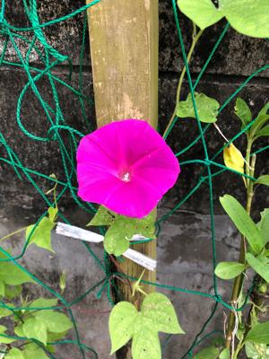
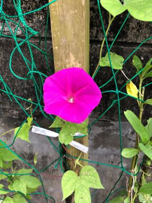
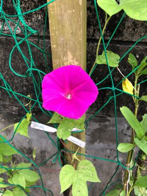

うるがいの話 ある日
最新: 大宜味村の感染状況
うるがいとは 前提知識です
カニの画像をクリックすると『うるがいの話』サイトを表示します
うるがい(ｳﾙｶﾞｲ urugai)とは、『もずくがに』の名前でとても大きくなります。
たながー（ﾀﾅｶﾞｰtanagaa）とは手長えびのことで、何種類かあり大きいのは車 エビぐらいになります。
ぶながー(bunagaa)とは、赤い髪の毛、赤い身体、そして身長は１ｍ２０ｃｍ ぐらい、川の蟹を食べているの目撃された。場所は沖縄県国頭郡大宜味村のと ある村僕の隣近所に住んでいる爺さんから、聞いた話です。
2021年07月26日 (月）
大宜味村の感染状況
17:11

琉球新報の先週水曜日で県内の感染状況が載っていた。大宜味村は、おお！以
外と感染している！。国頭村と東村は完全ゼロ、７月１８日（日）には『行楽
客続々感染を懸念 やんばる３村生活支障も・・７月下旬の大型連休を前に海
浜などの利用の自粛を強く求めている』東村は完全者ゼロを維持したいと書い
てあった。凄い！、東村、田舎だな・・・・。願いは天に届き、台風６号で叶
えられた、よっかたス。自然遺産が、今日にも登録（される筈）、良かった。
那覇からエールを送る。リアルな県全体の感染状況は、ヤバイ状況である。県
立図書館もあわててまた閉まったし、とりあえず７月末までとあったが無理だ
ろう。ワクチン接種の副作用有り（少し）、注射を打った左肩に筋肉痛がある

 
